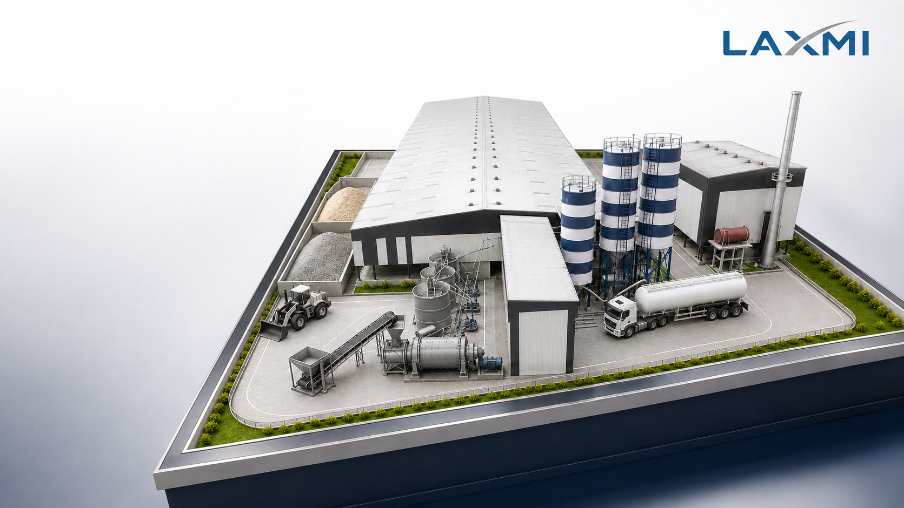

Production
Verified daily output and operating pattern.

AAC Investor Academy · Plant Design
Plan silos, stockyards, unloading and transfer around actual consumption, delivery logistics, material behaviour and future production—not a generic equipment list.
Project-specific sizing and safety provisions require verified raw-material and site inputs.
Direct answer
An AAC plant raw-material storage system connects receiving, unloading, storage, dust control, level monitoring and controlled transfer into preparation or batching. Its commercial purpose is simple: protect production continuity without creating avoidable capital, inventory or operating risk.
The design basis
Verified daily output and operating pattern.
Project recipe and material usage per m³.
Delivery lot, lead time and seasonal reliability.
Bulk density, moisture and flow behaviour.
Layout, road access, drainage and civil constraints.
Future output, downtime and redundancy strategy.
Material by material
The correct arrangement depends on supply form and material behaviour. “Typical” means a planning option—not a universal plant specification.
Bulk unloading and enclosed pneumatic transfer, matched to the delivery vehicle and site system.
Bulk tanker supply where local logistics support it; controlled bag-unloading where bulk supply is unavailable.
Receiving depends on lime form, package size, particle condition and whether preparation is required.
The method depends on consumption, dosing tolerance, labour exposure and automation level.
Storage must account for rain, drainage, moisture variation, dust and loader movement.
A safety-critical system governed by the selected product SDS and competent hazard assessment.
Storage capacity
Sizing every silo for a fixed number of days ignores delivery lots, bulk density, usable volume and supply risk.
Core planning relationship
Required stored mass
Use planned saleable output and the verified project recipe—not a generic percentage copied from another plant.
Account for supplier reliability, distance, delivery lead time, road conditions, seasonal disruption and working-capital limits.
Confirm the system can receive the planned tanker, truck or bag lot without unsafe overfilling or production interruption.
Use verified loose bulk density, filling limits, cone geometry, freeboard and residual material. Gross volume is not usable capacity.
Future expansion
The largest silo is not automatically the best expansion strategy. Compare present investment with future disruption and redundancy.
Option 01
Suitable when expansion is highly probable and the additional initial civil and equipment cost is justified.
Trade-off: higher early capital and inventory exposure.Option 02
Reserve foundation loads, access, pipelines and structural space when expansion timing remains uncertain.
Trade-off: reserved space must remain protected.Option 03
Useful when staged capacity and operating redundancy are commercially valuable.
Trade-off: later erection and tie-in downtime require planning.Safety-critical material
Fine aluminium powder can present serious fire and dust-explosion hazards under certain conditions. Storage and dosing must follow the selected product’s Safety Data Sheet, supplier instructions, competent hazard assessment and applicable Indian requirements.
Do not finalise equipment-specific instructions until the selected material and process arrangement are technically approved.
Procurement clarity
Define the complete operating system and supplier boundaries before comparing prices.
| System area | Items to define before ordering |
|---|---|
| Receiving | Vehicle connection, unloading-air source, hose or pipe route, identification and safe access. |
| Filling protection | Bin-vent filter, high-level alarm and interlock, pressure protection and safe venting. |
| Inventory control | Point-level switches, continuous measurement, reconciliation and PLC/SCADA display. |
| Discharge | Cone geometry, flow aids, isolation, feeder, conveyor and flexible connections. |
| Safety & access | Earthing, ladders, platforms, guarding, isolation and work-at-height provisions. |
| Scope boundary | Equipment, civil, electrical, erection, testing, commissioning and client responsibilities. |
Avoidable project errors
01Sizing from output without a verified recipe and bulk density.
02Ignoring the full delivery lot before unloading.
03Treating gross silo volume as usable inventory.
04Locating silos without checking vehicle access and foundations.
05Using one conveying concept for every powder.
06Ignoring monsoon drainage and moisture control.
07Treating pond ash, bottom ash and fly ash as interchangeable.
08Handling aluminium like an ordinary binder.
09Ordering a silo without filters, controls and discharge scope.
10Automating minor ingredients without checking minimum feed rate.
Investor questions
Concise answers for early planning. Final equipment and capacities still depend on verified project inputs.
Start with verified daily material consumption and required inventory days. Check delivery-lot size, then convert stored mass into volume using verified loose bulk density. Gross silo volume must not be treated as fully usable capacity.
There is no universal number. Decide it material by material using delivery reliability, supplier distance, lead time, seasonal disruption, working capital and production criticality.
Available free usable capacity should be checked against the planned delivery lot before unloading. The required margin depends on the delivery arrangement and overfill-control strategy.
A shared line can create contamination, flow and operational risks. Feasibility must be verified for material compatibility, cleaning, conveying duty and production sequence.
Consider it when consumption, bag-handling burden, dosing repeatability and production requirements justify the additional equipment and maintenance.
It depends on rainfall, dust, drainage, moisture sensitivity, process control and economics. A shed reduces direct weather exposure but does not replace drainage and housekeeping.
No. Fine aluminium powder can present serious fire and dust-explosion hazards. Storage and dosing must follow the product SDS, supplier instructions and a project-specific hazard assessment.
Sometimes. Compare a larger initial silo with expansion-ready foundations or a future parallel silo. The right choice depends on expansion certainty, capital, downtime and redundancy.
Before civil layout finalisation
Share your initial and future production capacity, project location, raw-material sources, delivery formats and site layout. The discussion can then focus on practical storage, unloading, expansion and scope decisions.